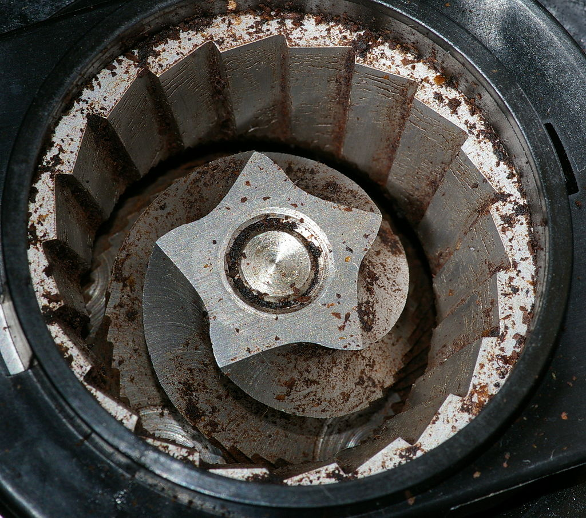

Preparation of Coffe
Roasting

Roasting coffee transforms the chemical and physical properties of green coffee beans. When roasted, Coffee can be roasted with ordinary kitchen equipment (frying pan, grill, oven, popcorn popper) or by specialised appliances. A coffee roaster is a special pan or apparatus suitable to heat up and roast green coffee beans. Coffee tends to be roasted close to where it will be consumed, as green coffee is more stable than roasted beans.The vast majority of coffee is roasted commercially on a large scale, but small-scale commercial roasting has grown significantly with the trend toward "single-origin" coffees served at specialty shops.
Grinding

The whole coffee beans are ground, also known as milling, to facilitate the brewing process. The fineness of the grind strongly affects brewing. Brewing methods that expose coffee grounds to heated water for longer require a coarser grind than faster brewing methods. Beans that are too finely ground for the brewing method in which they are used will expose too much surface area to the heated water and produce a bitter, harsh, "over-extracted" taste. At the other extreme, an overly coarse grind will produce weak coffee unless more is used. Due to the importance of a grind's fineness, a uniform grind is highly desirable.
Burr-grinding

Burr mills use two revolving abrasive elements, such as wheels or conical grinding elements, between which the coffee beans are crushed or "torn" with little frictional heating. The process of squeezing and crushing of the beans releases the coffee's oils, which are then more easily extracted during the infusion process with hot water, making the coffee taste richer and smoother. The vast majority of coffee experts agree that the most important tool for making delicious coffee is a good burr grinder. It’s more important than your brewer and just as important as the coffee itself—even the finest beans won’t taste their best if they aren’t consistently ground.s